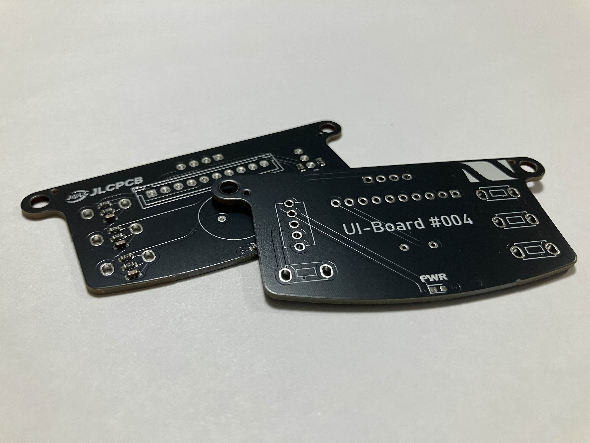
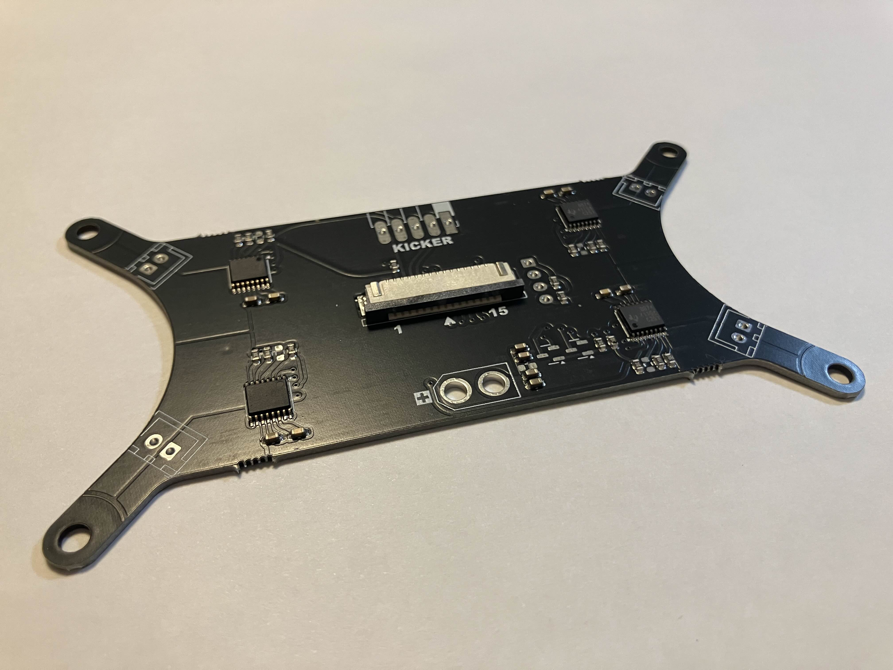
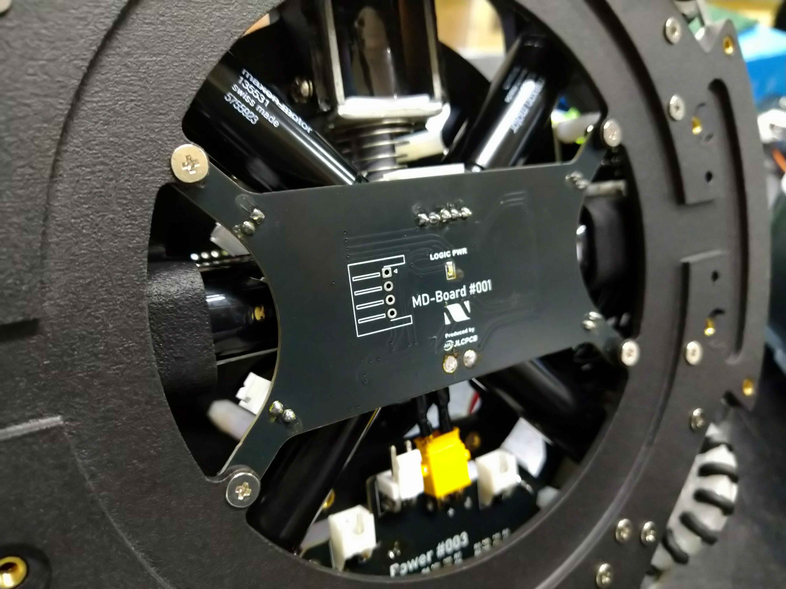
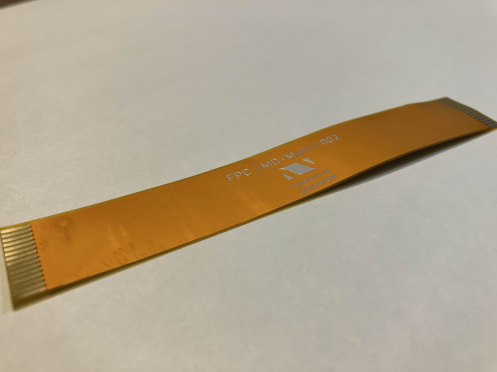
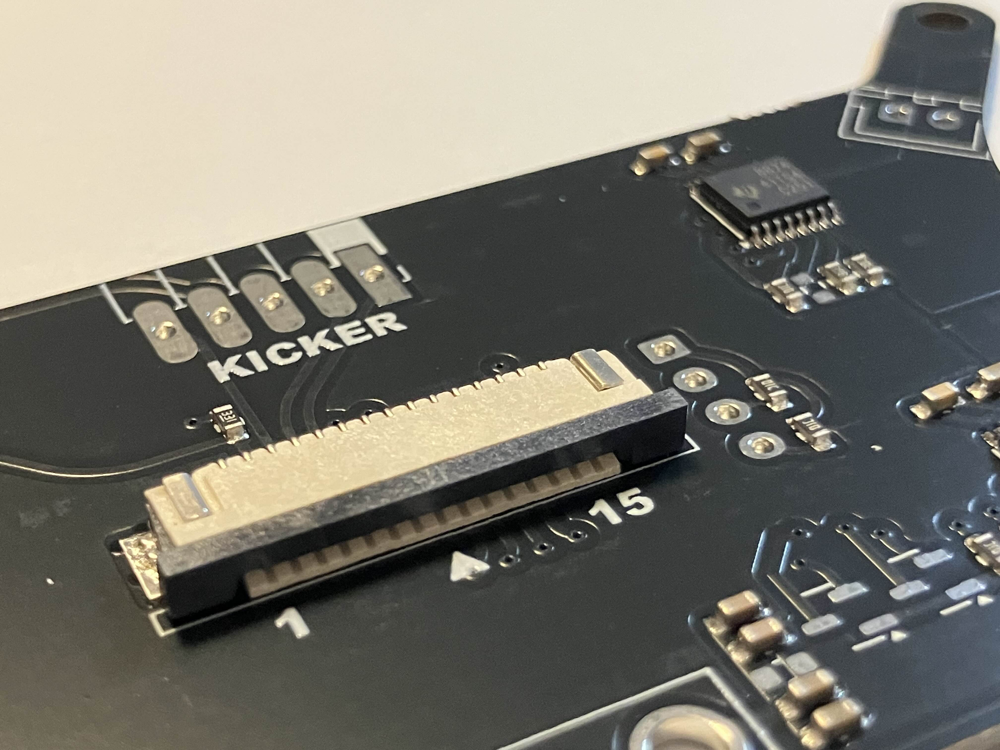

TOINIOT² Blog
UI/MD/FPC基板-2-
2024-12-16 Writer: 010
こんにちは。今回はJLCPCB様に基板(改良ver.)をいろいろ発注させてもらったお話。
なんと3種類も!!
IOT²の同時発注記録過去最高タイです笑
と、その前に毎回お世話になっているJLCPCB様の紹介を…!
JLCPCBは主に基板製作を手掛けている会社です。しかし、それだけではなく、3DプリントやCNC加工なども行っており、彼らに作れないものはない！と言っても過言ではありません。
そして、JLCPCB最大の特徴は「安い」「早い」「正確」の3拍子がそろっていること。
商品自体は1$から発注可能、工場は海外にあるのに、空輸とはいえ発注から2週間かからずでの到着はかなり魅力的です。
しかもこの2週間とはあくまでも通常配達での話。速達サービスを使えば数日で届きます。1週間もかかりません。ここでもう一度言っておきます。
出荷元は海外です！日本ではありません‼凄すぎ…
もちろん、確立された機械生産によって不良品に当たる可能性はほとんどありません。
あとそうそう、オペレーターの方がメールで注文内容について応対してくれるのも推しポイント!!
以前僕たちが頼ませていただいた基板の中に構造上貧弱になっている箇所があったのですが、このままでは危ないこと、解決策などを提案していただき事なきを得ました。 しかも全部無料で…!(*'▽')
今ならクーポンもゲットできるみたいです。 この機会をお見逃しなく！！

↓JLCPCB様のHP
https://jlcpcb.jp/
↓クーポンゲットのチャンス！
・新規ユーザー$60クーポン
https://jlcpcb.com/JPV
・その他のクーポン
https://jlcpcb.jp/coupon-center?from=6layer
では本題へ!!
1. UI基板

はじめに紹介するのがUI基板です。何度か似たようなお話を過去のブログでもしましたが、この基板、実はロボットに「絶対」必要なものではありません。
写真は何もはんだ付けされていないですが、完成するとボタンやモニターなどが取り付けられます。 そして、ロボットの操作やセンサ実験の確認などロボットを円滑に動かすために役立てられます。
また、ボタンなのに押しづらい、ディスプレイなのに見づらいといったことをなくすためでもあります。ロボットの中心に配置されているメイン基板に代わって操作関連に特化した基板を機体後方よりに配置することで、試合の時も落ち着いて、確実にロボットをスタートさせることができるのです。
要はロボットを「美しく」保つために必要ということ。まあ優先順位的には確かに最上位ってほどではありません。
ロボットは大前提として機能的であるべきです。そうじゃないと試合で勝てないので()ですが、普段は大丈夫でもこうした細かい差が試合のような余裕がない時には明暗を分けるもの。
美しさは使いやすさにも直結するので、時にそれが勝負のカギを握ることもあるでしょう。そして、「美しさ」に必要な基板ならそれ自体を美しくしたいところ。そこで登場するのがおなじみJLCPCBです。
自作だとどうしても銅板の色=基板の色ですが、発注であれば様々な色が選択できます。おすすめは写真の黒!やっぱりかっこいい!!
2. MD基板

この基板、MD用とだけあってモーターにできるだけ近いところとなるよう、ロボットの下のほう、具体的にはラインセンサの次に低い箇所に取り付けられています。
えっ!?そんなの当り前じゃない?
と思われる方もいらっしゃるかもしれませんが、その当たり前を一昨年までのIOT²は実現できていませんでした。その原因がMD基板が大きすぎること。
当時は市販のものを使っていたこともあり、そこそこのサイズだったのでメイン基板の真下に積むしかありませんでした。そうなると、MD基板とモーター本体をつなぐ配線が1段目と2段目をまたぐため、修理などで機体を解体するときにかなり面倒なことになるんですよね…
線が引っ張られて、断線の原因にもなりますし。要は、MD基板を1段目に移すことが求められていました。去年からはついに自作に挑戦したもの、床板のアルミ板(平面)も影響し、分割して左右に配置するのが精一杯でした(それでも当初の1段目にMDを置くという最大の目標は達成されました。JLCPCB様々です)。
そして今年、機体のボディもJLCPCB様に発注させていただき、立体でより複雑な構造を実現。MD基板のほうも改良を重ね、さらなる省スペース化を図り、ついに写真のような無駄のないロボットを製作することに成功しました。
ちなみに、ボディに関してはこちらの記事で詳しく紹介しているのでよければご覧ください。

3. FPC基板


一般的な基板は硬くて曲げることなど当然できませんが、こちらのFPC基板は容易に曲げることができ、 ロボットの狭いスペースでも楽々繋げます。おそらくこれが一番の特徴でしょう。
僕たちは、ロボット最下部と最上部にあるMD基板とメイン基板を繋ぐケーブル代わりに使っています。
というのも昨年はフラットケーブルを使用していたのですが、線がまとまっている一方長さの調整ができない(厳密にはできますが技術的に断念しました)というデメリットを抱えており、 結局ロボットのスペースを奪ってしまったのです。
その点FPCは長さは自由自在。若干接続部分が繋ぎづらくなるものの、頻繁に取り外す箇所でなければ問題ありません。
ただし、その特性上、耐久性はハッキリ言って低いです。長く使っていると通電不良が起こるので、数か月ごとには変えることをお勧めします。
実際、僕たちのチームでもある日突然ロボットが動かなくなって、色々調べてみたらそこが原因だったというトラブルがありました。
ちなみに上のMDの写真の中央に映っている灰色の四角い突起がFPCを挿すところになっています。
そして、普通の基板はエッチングを用いて何とか自作することはできますが、(できるとは言え、かなりの確率で失敗します。 JLCPCB様に発注するほうが確実です)FPCは100%無理です。
そこでJLCPCB様の登場!回路ミスなどほとんど起こりえないのはもちろん、見た目も市販品そのものです。FPC基板の写真のように文字やロゴの印刷もOK!UI基板同様カッコよく仕上がりますよ(^▽^)/
前回のメイン基板のお話に続き、今回紹介したものもロボットを構成するとても重要な基板です。
当然どこか1ヶ所でもミスがあれば、ロボットの機能が失われることになります。
そのような中、限られた時間で失敗を最小限に抑え、機体を完成に導けるのはJLCPCB様の技術があって初めて成り立つものです。
このようなことは絶対に自作の基板では成し遂げられません。
本当に感謝しなければなりませんね。
さて、今週にはいよいよRCJ和歌山ノード大会を迎えます。
私たちTOINIOT²最後のシーズン、いよいよスタート!寝屋川、名古屋で皆さんと会えるよう全力で戦います。
いくぞ、世界!!
今回はここまで。
最後まで読んでいただきありがとうございました。